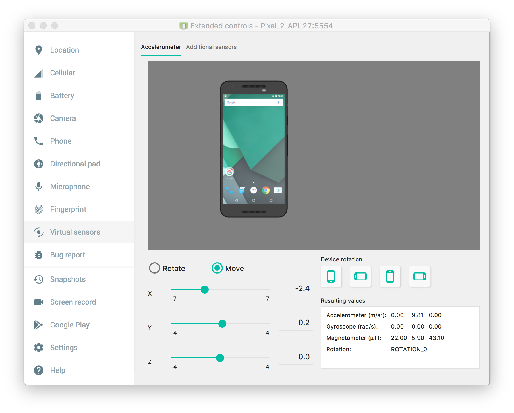
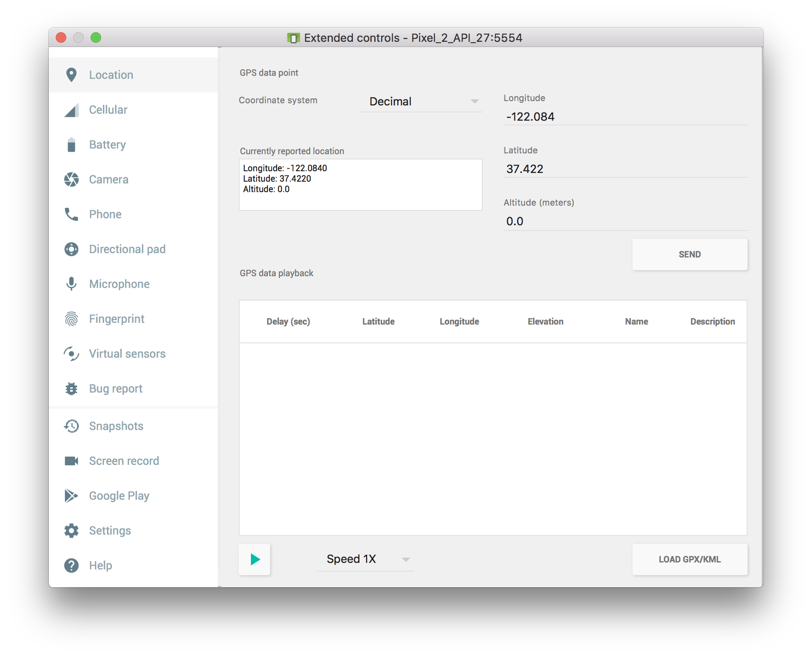

In your app build.gradle file add the following dependency, and change to the latest version. Currently the latest version is 1.8.0.
implementation 'com.github.nisrulz:sensey:{latest version}
You will have to re-sync gradle after adding the dependency.
In the MainActivity.java file, add the following lines to import the Sensey Library and the Shake Detector:
import com.github.nisrulz.sensey.Sensey;
import com.github.nisrulz.sensey.ShakeDetector;
Then, initialize the Sensey object and shake detection by adding these lines in the onCreate() function:
Sensey.getInstance().init(this);
Sensey.getInstance().startShakeDetection(shakeListener);
Now that we are alerted when the device is shaking, we have to actually do something when the user shakes the device. To do this, we create a ShakeListener with callbacks for when shaking begins and ends. Add this code inside your activity class:
ShakeDetector.ShakeListener shakeListener = new ShakeDetector.ShakeListener() {
@Override public void onShakeDetected() {
}
@Override public void onShakeStopped() {
}
};
Since we want to change the image when we detect a shake, call selectRandomCat() in the onShakeDetected() method. Additionally, you can do anything else you want when detecting a shake.
Note: Even if you do not use the onShakeStopped() method (we do not in this example), it still must be overrided to create the shakeListener.
Now that our shake detection is all set up, we need to test it out. If you have a physical device, this is easy since you can just shake the device. However, testing on the AVD is a little trickier.
First, run the app on the AVD. Then, on the toolbar next to the device, click on the ... at the bottom. This should open up a new extended controls window. Click on the Virtual Sensors tab on the left. Select the Move radio button. To simulate shaking, drag one of the sliders back and forth quickly. The image should change!

Extended Control Panel with Virtual Sensors
Getting Device Location
In this section of the tutorial, we will be getting the user's location from the device's gps. In your app's build.gradle, add the following line, and resync your gradle file.
implementation 'com.google.android.gms:play-services-location:15.0.1'
The location manager is a service that allows you to get information about the device's location. The location manager has a "gps provider" that gives us the current location. To use the gps provider, add the following permission in the AndroidManifest:
<uses-permission android:name="android.permission.ACCESS_FINE_LOCATION"/>
We are going to write a function getLocation() that returns a Location. Call this function in onCreate().
private Location getLocation() {
}
First we will create a location manager object and then use it to get the last known location
private Location getLocation() {
LocationManager locationManager = (LocationManager) getSystemService(LOCATION_SERVICE);
return locationManager.getLastKnownLocation(LocationManager.GPS_PROVIDER);
}
Unfortunately, it is not this easy. Because the user may not have permission to use the gps provider, we have to check for permissions before we call getLastKnownLocation().
private Location getLocation() {
Location location = null;
/* This section checks if the user has permission to access fine location.
If they do not, then we request this permission.
If after requesting, we still do not have permission, we have to not use gps services */
if (ContextCompat.checkSelfPermission(this, Manifest.permission.ACCESS_FINE_LOCATION)
!= PackageManager.PERMISSION_GRANTED) {
ActivityCompat.requestPermissions(this, new String[] {android.Manifest.permission.ACCESS_FINE_LOCATION},
MY_PERMISSION_ACCESS_FINE_LOCATION);
}
// If we do have permission
else {
LocationManager locationManager = (LocationManager) getSystemService(LOCATION_SERVICE);
location = locationManager.getLastKnownLocation(LocationManager.GPS_PROVIDER);
}
return location;
}
In this function, MY_PERMISSION_ACCESS_FINE_LOCATION is a constant int. The value does not matter as long as it does not change (I used 1).
We now need to figure out what to do when we ask for permission to use the GPS. If we get permission, then we want to get the location. Otherwise, we need to tell the user we will not be using location services. To accomplish this, we want to override the onRequestPermissionsResult() function.
@Override
public void onRequestPermissionsResult(int requestCode, String permissions[], int[] grantResults) {
switch (requestCode) {
case MY_PERMISSION_ACCESS_FINE_LOCATION: {
if (grantResults.length > 0 && grantResults[0] == PackageManager.PERMISSION_GRANTED) {
getLocation(); // If we get access to location data, we want to get location again
} else {
// TODO: Tell the user location is disabled
}
return;
}
}
}
If we are given location access, then we call getLocation() again. Even though this callback was triggered because of getLocation(), when we call getLocation() again, we now have permission, so the code in the else statement will execute.
Now that we are sure we are allowed to use the location, we have to get some useful information out of it and display it to the user. We will create a textView that will display the name of the city the device is in.
Create a function that will display the location using this text field
private void displayLocation(Location location) {
}
To find the city, we first need to get the latitude and longitude, using the aptly named functions.
private void displayLocation(Location location) {
double latitude = location.getLatitude();
double longitude = location.getLongitude();
}
Now we can use a Geocoder to get useful information from this latitude and longitude. Geocoders can convert between longitude and latitude and human readable addresses. Define a geocoder in the activity class, and then instantiate it in onCreate().
private Geocoder geocoder;
geocoder = new Geocoder(this, Locale.getDefault());
We can use this geocoder object to get the address information
private void displayLocation(Location location) {
double latitude = location.getLatitude();
double longitude = location.getLongitude();
List<Address> addresses = geocoder.getFromLocation(latitude, longitude, 1);
String city = addresses.get(0).getLocality();
}
Getting the city this way can result in a few errors. First, getFromLocation() throws an IOException, so we need to call it in a try catch block. Additionally, if the latitude and longitude do not correspond to a place that the geocoder knows about, then addresses will be an empty list, and you cannot use .get(0) on an empty list. Therefore, we will add some error checking.
private void displayLocation(Location location) {
double latitude = location.getLatitude();
double longitude = location.getLongitude();
try {
List<Address> addresses = geocoder.getFromLocation(latitude, longitude, 1);
if(addresses.size() > 0) {
String city = addresses.get(0).getLocality();
}
else {
// TODO: No City
}
}
catch (IOException e) {
// TODO: Unable to run geocoder
}
}
Finally, we actually want to set the TextView in the UI. I created a helper function to set my text field, which had an id of cityText.
private void setCityText(String msg) {
TextView t = (TextView)findViewById(R.id.cityText);
t.setText(msg);
}
The final display location function:
private void displayLocation(Location location) {
double latitude = location.getLatitude();
double longitude = location.getLongitude();
try {
List<Address> addresses = geocoder.getFromLocation(latitude, longitude, 1);
if(addresses.size() > 0) {
setCityText(addresses.get(0).getLocality());
}
else {
setCityText("No City Here!");
}
}
catch (IOException e) {
setCityText("Unable to Find City");
}
}
We can now go back and fill in our TODO from step 2. Simply call setCityText("Location Disabled")
Now we can display the location when the app starts up. But what about when the device moves? We can subscribe to location changes and be notified when the device has moved a certain distance or a certain amount of time has passed.
First, we have to create a location listener object. This is what will watch for device location changes.
private final LocationListener locationListener = new LocationListener() {
@Override
public void onLocationChanged(Location location) {
displayLocation(location);
}
@Override
public void onStatusChanged(String provider, int status, Bundle extras) {}
@Override
public void onProviderEnabled(String provider) {}
@Override
public void onProviderDisabled(String provider) {}
};
We have our location listener, but it is not used anywhere yet. We need to tell the location manager that we want location updates. In our getLocation() function we will call requestLocationUdates(). In the else statement, below getLastKnownLocation() add the following line.
locationManager.requestLocationUpdates(LocationManager.GPS_PROVIDER, LOCATION_REFRESH_TIME, LOCATION_REFRESH_DISTANCE, locationListener);
LOCATION_REFRESH_TIME and LOCATION_REFRESH_DISTANCE are values that specify how often you want an update and after how far the device has traveled. These can be populated dynamically, but for simplicity, we are going to define them in our main activity.
private final long LOCATION_REFRESH_TIME = 2000; // Location Update time (ms)
private final float LOCATION_REFRESH_DISTANCE = 100; // Location Update distance (m)
First we want to test our permissions. When you run the app, you should be presented with a Toast that asks if you want to allow the app to access your location. Click No. You should see the Location Disabled message. Now restart the app and click yes. If the Toast does not appear, try re-running the app. The current location should now be present. By default the location is Mountain View. To change the location, click on the ... at the bottom of the toolbar next to the AVD. Click on the first tab labeled Location. Here you can change the Longitude and Latitude. Test on combinations that you know are valid cities and combinations that you know are in the middle of the ocean. Check to make sure the "No City Here!" message prints when there is in fact no city there.

Extended Control Panel with Location